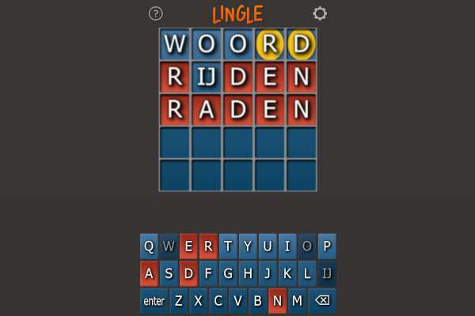
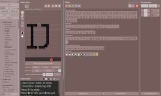
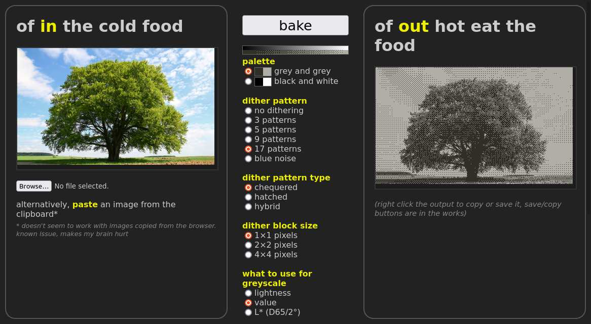
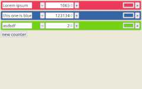
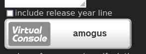

Webapps
Hier vind je mijn webappjes. Ik schrijf het liefst programma’s die je gewoon gelijk in je internetbrowser kunt draaien zonder iets te hoeven downloaden of installeren.
Web apps
Here you can find all the web apps I’ve made. I prefer writing stuff that just runs directly in a browser with no need to download or install anything.

Lingle
Een Nederlandstalige Wordle met een oude vertrouwde look. Ondersteunt de lange IJ!
A Dutch version of Wordle with a familiar look and feel. Supports the IJ digraph!
Naar Lingle Go to Lingle
Tophat
Een krachtig gereedschap voor het ontwerpen van bitmaplettertypen, bedoeld als hulpmiddel voor het ontwikkelen van software op de Playdate. Ondersteunt Unicode, kerning en het importeren van TrueType-lettertypen.
A powerful bitmap font creation tool for Playdate game development using the Playdate SDK. It can import TTF/OTF fonts, allows for wide Unicode support, and lets you preview, filter and edit kerning pairs directly from the main screen.
Naar Tophat Go to Tophat
Oven
Een conversieprogrammaatje om afbeeldingen mee te verzwartwitten, wederom bestemd voor Playdate-softwareontwikkeling. Ondersteunt meerdere soorten dithering en aanpasbare helderheidsniveaus.
A simple 1-bit image converter, primarily made to aid in Playdate asset creation. Supports various types of dithering, and features a brightness curve editor.
Naar Oven Go to Oven
Counter
Een doodsimpel ding waarmee je van alles kunt bijhouden, met namen en kleurtjes. Wordt op je eigen computer lokaal opgeslagen, zodat het behouden blijft ook als je het venster sluit.
This thing lets you keep count of anything, saving it to your browser’s local storage. You can add multiple counters, change their names and colours, and all of it will still be there even if you refresh the page.
Naar Counter Go to Counter
Bandgen
Een shitty tooltje om 3DS Virtual Console-banners mee te maken, puur omdat ik het lettertype Rodin niet werkend kon krijgen in New Super Ultimate Injector (door Asdolo op GBAtemp) op Linux via Wine.
A sloppy made‑in‑a‑day does‑the‑job kind of tool that generates 3DS Virtual Console styled banners, made to be used with New Super Ultimate Injector (by Asdolo on GBAtemp) because Wine wouldn’t let me use the font Rodin properly.
Naar Oven Go to Oven